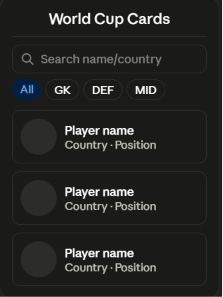
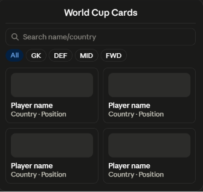

Overview
Purpose
As a lifelong Manchester United fan and someone who's been completely invested in following the 2026 World Cup, I wanted to build something that combines my love for football with what I've learned this semester. This app lets users browse and search player cards from the top 10 FIFA-ranked national teams competing in the tournament, making it easy to look up call-up info and stats for their favorite players in a fun, interactive way.
Audience
This application is designed for football fans who are following the 2026 FIFA World Cup and want a quick, interactive way to explore national team squads. Whether someone wants to look up a favorite player, compare players from different countries, or simply learn more about the tournament, this app provides an organized and enjoyable experience.
Dynamic elements
JavaScript will provide all of the interactive features of the application. Player information will be stored as an array of objects, with each object containing details such as the player's name, country, position, club, age, appearances, goals, and an image. When the page loads, JavaScript will display player cards by looping through the array using forEach(). Users will be able to search for players by name, country, club, or position. The search results will be filtered using filter(), sorted alphabetically using sort(), and then displayed by updating the HTML with JavaScript. Event listeners will respond to button clicks and keyboard input, while conditional statements will display a message when no players match the search and can also highlight captains or other featured players.
Branding
Website Logo
Style Guide
Color Palette
Palette URL: https://coolors.co/006847-ffffff-c8102e-f4c430| Primary | Secondary | Accent 1 | Accent 2 |
|---|---|---|---|
| #006847 | #FFFFFF | #C8102E | #F4C430 |
Pseudocode for your project
1. Create an array of player objects containing the player's name,
country, club, position, age, appearances, goals, captain status,
and image.
2. When the page loads, display all player cards.
3. Create a function that generates the HTML for one player card.
4. Create a function that loops through the array using forEach() and
displays every player card.
5. Listen for clicks on the Search button and the Enter key.
6. Get the user's search text.
7. Convert the search text to lowercase and remove extra spaces.
8. Filter the player array by checking the player's name, country,
club, or position.
9. Sort the filtered players alphabetically.
10. If no players are found, display a message saying "No players found."
11. Otherwise, display the filtered player cards.
Wireframes


Landing page
The landing page will display the website logo, a search bar, name, country, club, or position. Results will update and responsive player cards. Users can search players by immediately after searching.
Additional Pages
This project will consist of a single responsive page, so no additional pages are planned.